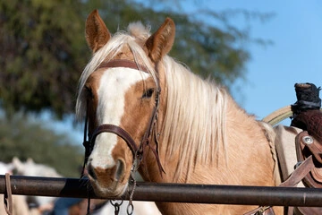

Your brand.
Real impact.
Yuma can see it.
This isn't about a logo on a banner. It's about something rarer — complete transparency, a community that pays attention, and animals whose lives are genuinely different because your business showed up. Want to do more, like sponsor our facility or back an event? We'd love to talk.
Saint Francis runs on zero overhead. There is no development office, no paid staff, no layer of administration between your gift and the animal it feeds. For a corporate partner, that's unusual — and it matters. Every dollar you give is a dollar we can account for: a bag of feed, a vet bill, the hoof trim that keeps a horse comfortable and sound. We will tell you exactly what we spent it on. That's not a pitch. It's how we've operated from day one.
We've been doing this in Yuma for over fourteen years — twelve of them quietly, out of our own pockets, before we ever asked the public for anything. The community follows us because they've watched it happen: animals come in broken and leave whole, or they stay and finally have somewhere safe to grow old. A partnership here isn't a logo placement. It's a story your employees, customers, and neighbors can see with their own eyes.
Six ways to make it real
Pick one or combine several. We'll work around your team's capacity, your giving calendar, and what actually makes sense for your business.
Matched Giving
Your team donates; you double it. We'll give you one clean number to match — no compliance forms, no layered reporting, no overhead on our end eating into the match. You'll see exactly what the combined gift funded.
Employee Volunteer Days
Bring your team to the sanctuary for a half or full day of real, physical work — feeding, mucking, fence repair, animal socialization. It's the kind of team-building people actually remember. We'll take care of the rest.
In-Kind Donations
Feed, hay, fencing, lumber, medical supplies, gift cards to farm suppliers. If your business produces it, sells it, or can source it, there's a good chance we can put it directly to work. No middleman, no markup.
Sponsor a Specific Need
Underwrite one thing completely — a season of farrier visits, a surgical fund, a new goat enclosure, the water system repair we've been nursing along. You'll know what your money did, down to the invoice.
Host a Fundraiser
Round up at the register. Dedicate a sales day. Host a raffle or a field trip. We'll support you with content, the story, and whatever it takes to make your fundraiser something your customers want to participate in.
Donate Your Expertise
Veterinary care, large-animal hauling, construction, electrical, printing, bookkeeping. Professional services donated in-kind stretch every cash donation further and solve problems money sometimes can't. We value skills as much as checks.
We work to make it worth your while
A written acknowledgment letter
IRS-compliant, ready for your records. Issued promptly so your accounting team isn't chasing paperwork at year end.
Photos and impact documentation
We'll show you what your gift funded — real photos of the animals, the facility work, or the supply run it made possible.
Recognition across our channels
Acknowledgment on our website and social media to an engaged Yuma audience that actively supports local businesses who support us.
A direct line to the people doing the work
No development director as an intermediary. You'll communicate with the volunteers who feed these animals every morning.
Fully tax-deductible.
Completely traceable.
Every dollar of your corporate partnership is deductible to the extent permitted by law — and every dollar reaches the animals. There's no overhead layer between your giving and its effect. If your CFO wants receipts and documentation, we'll have them waiting.